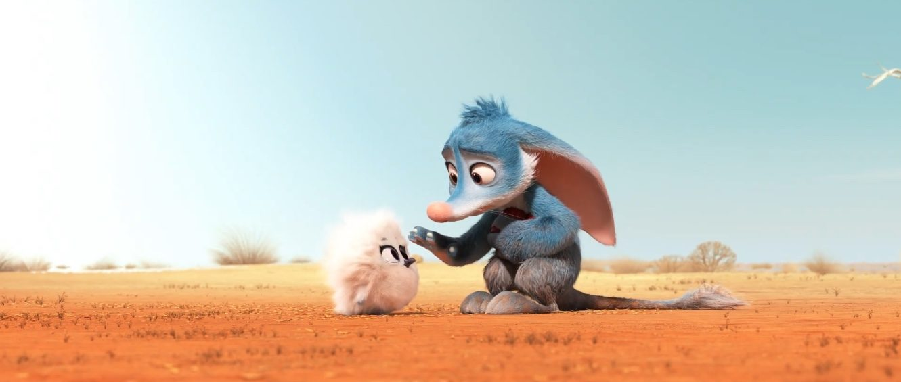
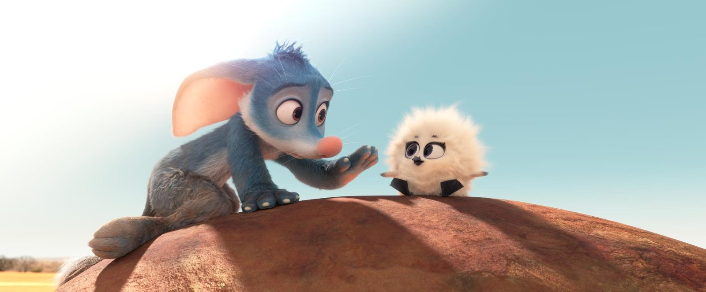
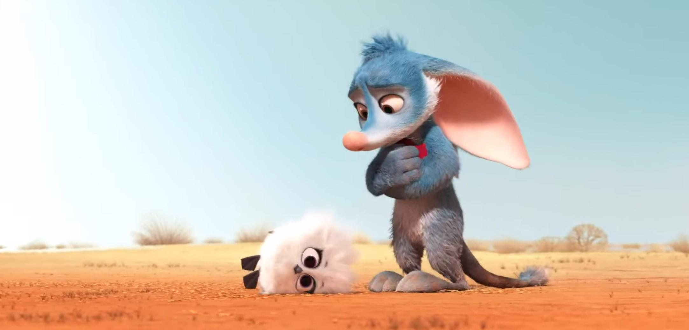
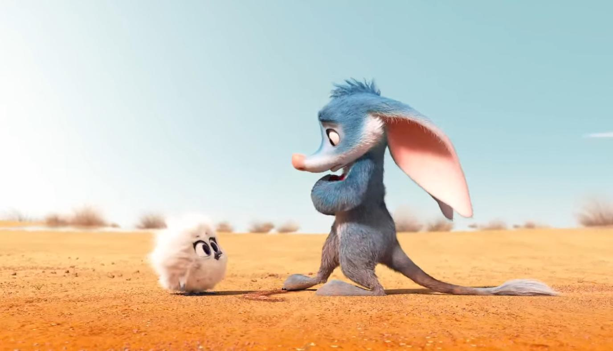
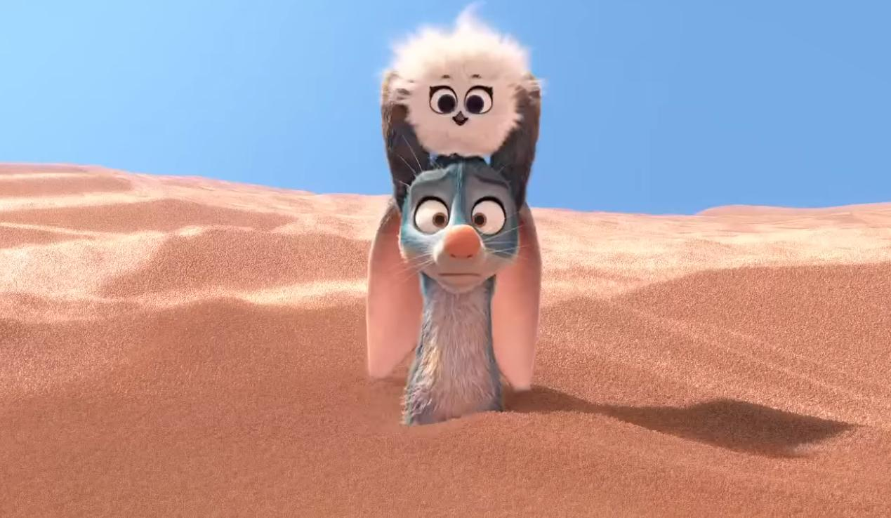

ЗАБОТА
Это не только слова, но и реальные поступки. Каждый раз, когда Перри рискует собой ради птенца, он доказывает это.

THE UNEXPECTED HERO
Иногда, чтобы стать чьим-то героем, достаточно просто быть рядом.
УЗНАТЬ ИСТОРИЮЛИСТАЙТЕ ВНИЗ
Австралийская глубинка — бескрайняя красная пустыня, где каждый день — испытание. Здесь, среди опасностей, живёт маленький билби по имени Перри.
Он привык выживать в одиночку, но одна неожиданная встреча изменит всё.


Среди хищников и песков он находит беззащитного птенца альбатроса. Маленький, растерянный, он не должен был выжить здесь. Но Перри не может пройти мимо.
«Иногда забота начинается с простого решения не оставить другого в беде.»
Дорога через пустыню превращается в череду испытаний — но теперь он не один.

Пыль. Жара. Опасность.
Каждый шаг — ради кого-то другого.
И постепенно страх сменяется привязанностью.«Иногда забота начинается с простого решения не оставить другого в беде. Помогая кому-то, мы можем неожиданно изменить и самих себя.»
Это не только слова, но и реальные поступки. Каждый раз, когда Перри рискует собой ради птенца, он доказывает это.
Иногда она появляется неожиданно — когда кто-то нуждается в нашей помощи. И отказаться уже невозможно.
Она может возникнуть между совершенно разными существами. Даже там, где, казалось бы, нет места нежности.
КОРОТКАЯ ИСТОРИЯ. БОЛЬШОЙ СМЫСЛ.
А ты когда-нибудь помогал кому-то, не ожидая ничего взамен?
«Иногда, чтобы стать чьим-то героем, достаточно просто быть рядом.»
THE UNEXPECTED HERO
Сайт создан как дань уважения короткометражному фильму DreamWorks Animation.